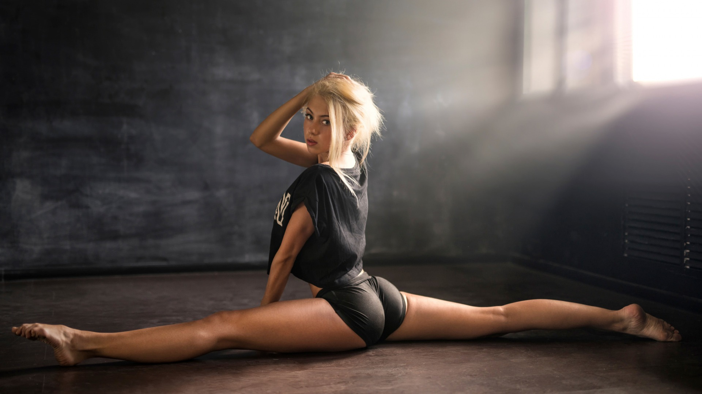

Стретчинг (от анг. глагола to stretch — растягивать) — это комплекс упражнений, направленный на развитие гибкости. Данное спортивное направление включает в себя комплексные упражнения и специальные позы, которые способствуют контролируемому растягиванию связок, мышц и сухожилий конечностей и туловища.

Это направление работает не только с формой тела, но и имеет значительный оздоровительный эффект. Стретчинг широко применяется в качестве реабилитационной программы после различных травм.
Занятие стретчингом стимулирует кровообращение и циркуляцию лимфы, способствует восстановлению мышц после нагрузок, помогает расслабиться и снять нервное напряжение.
Данный вид нагрузки подходит большинству, вне зависимости от возраста и гибкости.